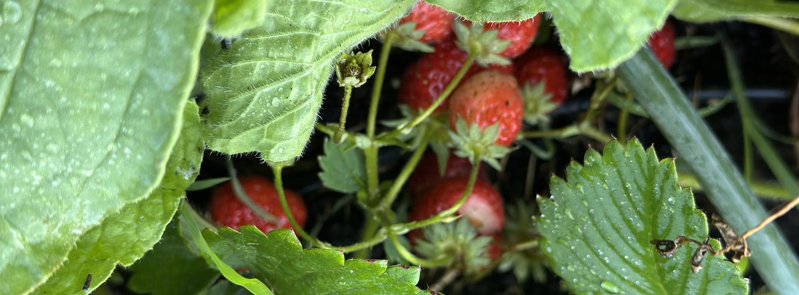

Week-long immersions at the chateau.
Seven days at Chateau de Séailles, in SW France. Real practice, real body, real life — held for a week, in one of the quietest corners of Europe.
What an immersion is
A structured digital detox, paced to your nervous system.
Mornings and evenings hold contemplative practice — yoga, meditation, dance, nei gung. Afternoons hold the land — nature rambles, lake visits, gardens, ponds, and the pool. Coaching is woven in for those who want it. Massage is available throughout the week. Meals are organic, slow, and served whenever possible outdoors, under the trees in the chateau grounds.
Then the day softens. Hammocks. The salt-water pool. Evenings under southern French stars around the fire pit. Quiet enough to actually hear yourself again.
What's included
- Daily yoga, meditation practice and classes, dance, and nei gung
- Coaching sessions, woven into the week
- Massage
- A structured digital detox
- Three organic meals a day, served whenever possible outdoors, under the trees in the chateau grounds
- Nature rambles, lake visits, time in gardens and around the ponds
- Access to the salt-water pool, hammocks, and grounds throughout the week
- Long slow evenings around the fire pit, under southern French stars
Four themed immersions, each year
Each immersion sits inside the arc of the year and the arc of the work.
- May — Waking up to yourself. Bring your coaching goals.
- June — Love thyself. Building trust in, and with, yourself.
- July — Sound and silence. Music, sound healing, felt vibration and movement — as the door into deep rest and connection.
- September and October — Building the container for deep meditation. Nervous system first, then heart, then spirit.
When
Immersions run in the shoulder seasons:
- May to late-July
- September to October
These months for their quality of transition, their gentler light, warmer earth, and the air that doesn't ask anything of your nervous system.
Accommodation
- Dormitory beds and shared rooms — capacity 20.
- Four king rooms — for couples or those wanting private accommodation.
Investment
€1,890 per person for a 7-day, 8-night immersion. All meals included. Airport and train-station transfers quoted separately.
To register interest
Dates and pricing for upcoming immersions are released to the email list first.